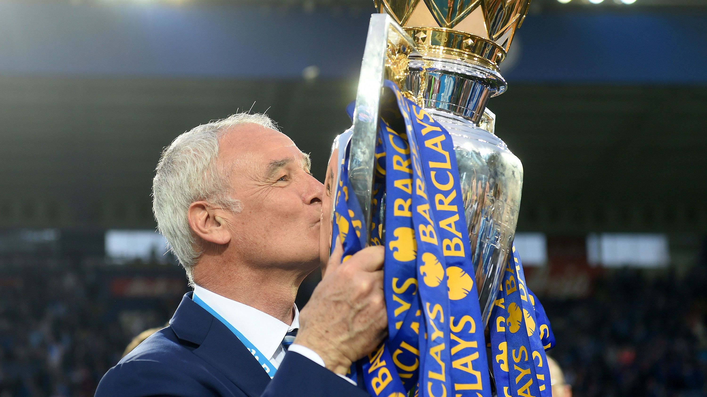
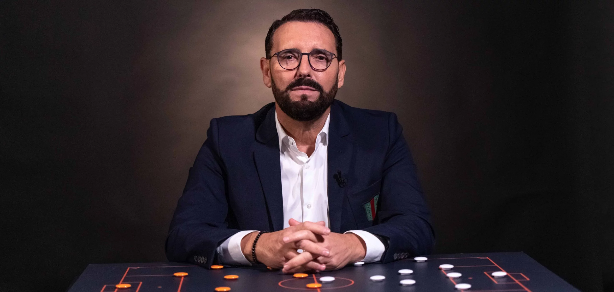
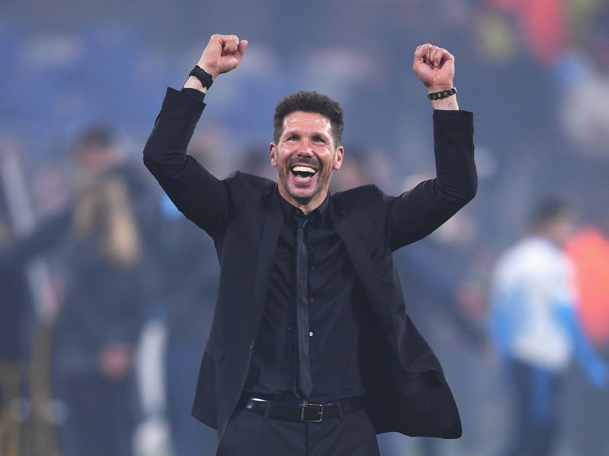
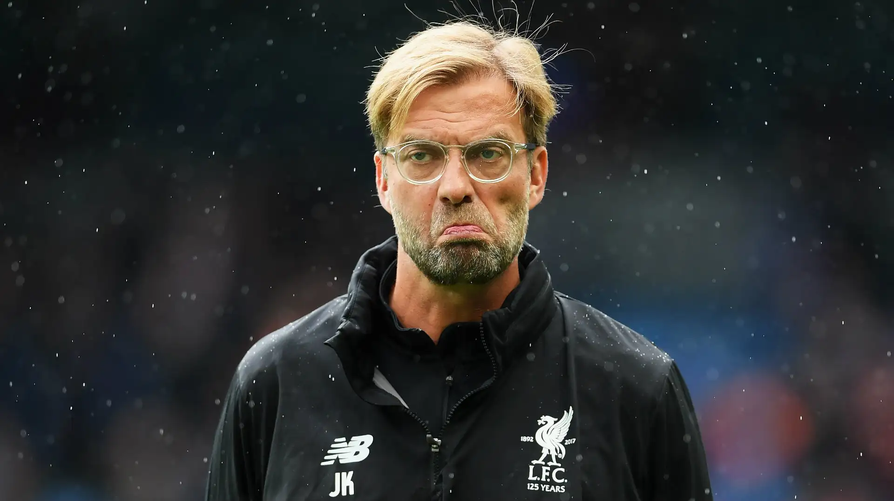
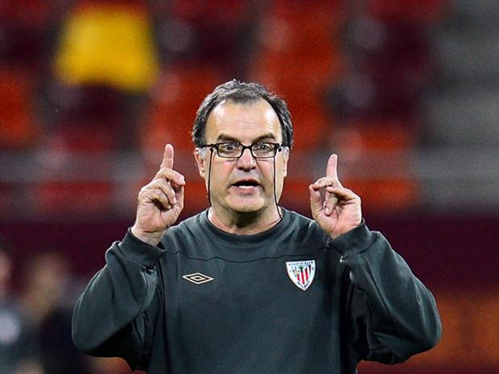

Claudio Ranieri
La mayor hazaña moderna del fútbol. Ranieri moldeó un equipo humilde en una máquina competitiva capaz de derrotar a gigantes multimillonarios. Defendiendo con orden, atacando con velocidad y creyendo cuando nadie más creía. Un milagro irrepetible.

José Bordalás
Bordalás es el entrenador del barro por excelencia. Transformó al Getafe en un equipo rocoso, intenso, agresivo y respetado. No jugaba bonito: jugaba duro, directo y sin complejos. Cada balón dividido era un combate, cada partido una guerra mental. Llevó al Getafe a Europa con un estilo innegociable y una mentalidad de hierro.

Diego Simeone
El Cholo convirtió al Atlético en un gigante mediante carácter, disciplina y un fútbol hecho de resistencia y espíritu. Ganó Ligas, jugó finales de Champions y construyó una identidad basada en el esfuerzo extremo. Su sello quedó tatuado en la historia rojiblanca.

Jürgen Klopp
Klopp levantó a un Dortmund joven y lo transformó en uno de los equipos más atractivos de Europa. Presión alta, verticalidad, ritmo frenético y un título de Bundesliga arrebatado al todopoderoso Bayern. Una revolución futbolística.

Marcelo Bielsa
Desde la intensidad y la disciplina, Bielsa llevó al Athletic a competir de tú a tú con los mejores de Europa. Sus jugadores corrían más que nadie, presionaban como animales y ejecutaban un plan táctico milimétrico. Dejó una huella imborrable en Bilbao.